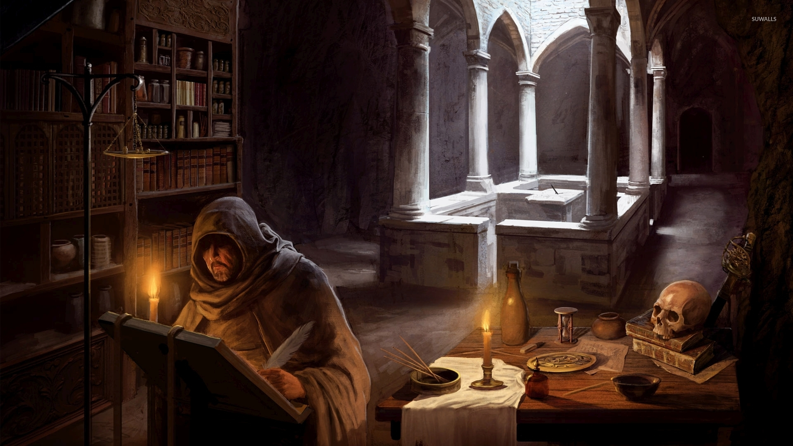
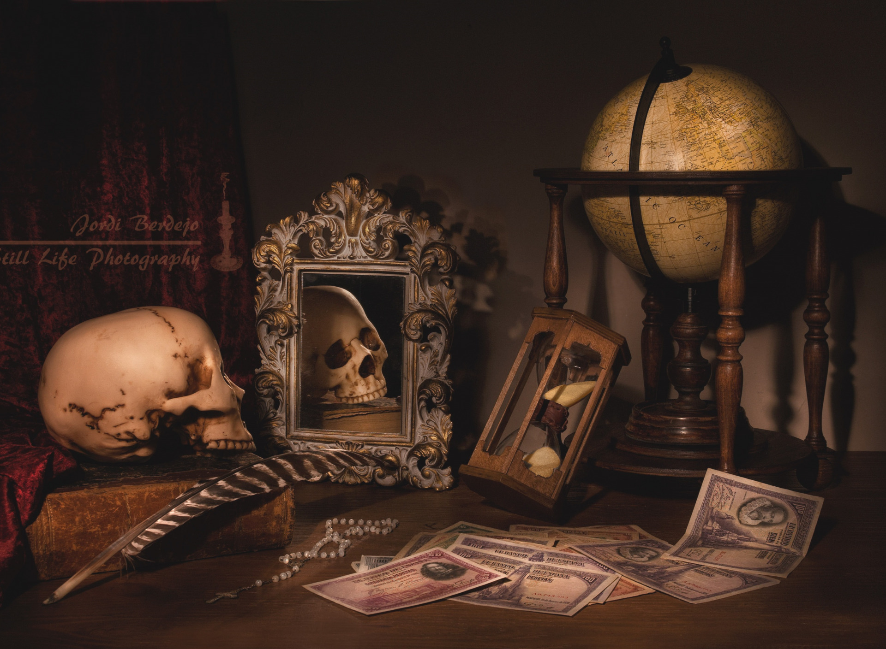

Фэнтези/ Фантастика
Фантастика — жанр, объединяющий художественные произведения, в которых повествуется о событиях, мирах и героях, нарушающих границы реальности.
Фэнтези — жанр литературы, для которого основой сюжета или сеттинга является магия.

Детектив
Детектив — преимущественно литературный и кинематографический жанр, произведения которого описывают процесс исследования загадочного происшествия с целью выяснения его обстоятельств и раскрытия загадки.
Романтика
Романтика — эмоционально-возвышенное мироощущение, создаваемое различными идеями, чувствами, эмоциями, и условиями жизни.
Триллер/ Ужасы
Триллер — жанр произведений литературы и кино, нацеленный вызвать у зрителя или читателя чувства тревожного ожидания, волнения или страха.
Ужасыжанр литературы, главной целью которого является вызов у читателя чувства страха, ужаса, шока.
